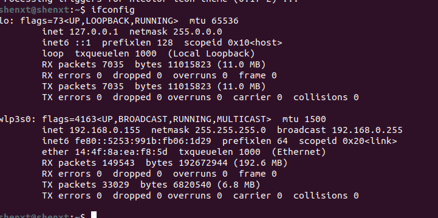

sudo apt-get install gdebi-core
wget https://download2.rstudio.org/rstudio-server-1.1.383-amd64.deb
sudo gdebi rstudio-server-1.1.383-amd64.debps -aux|grep rstudio-server或者使用
sudo rstudio-server verify-installation看是否安装正确。
sudo rstudio-server startsudo rstudio-server statussudo rstudio-server stopsudo rstudio-server restart添加用户命令是使用Linux中的命令。
sudo useradd new_user_name后面需要填写密码以及一些其他的信息。
可以添加用户组，这样能够分组进行管理。
sudo groupadd new_group也可以给用户组添加用户：
sudo useradd new_user_name -g new_groupuserdel user_name
groupdel group_name默认有端口为8787.需要先获得该电脑的IP地址。
使用ifconfig获得。

然后使用http://192.168.0.155:8787/就可以远程访问了。